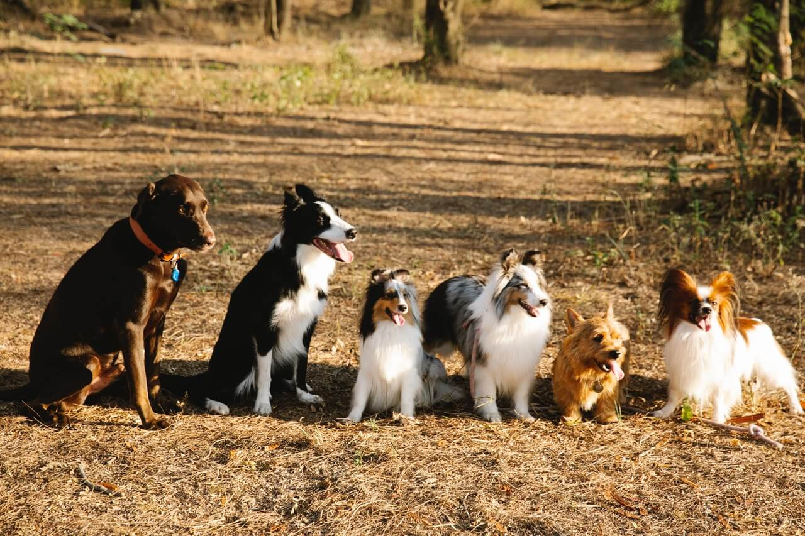

5 Best Dog Breeds for First-Time Owners
Written By: Author Name Nov 17 2021
Getting a dog is a truly exciting time. With thousands of breeds and hybrid breeds available, choosing the right breed for your first dog can be baffling. Above all, you must choose a dog that matches your lifestyle. If you’re an active person that loves to walk or run, choose a dog with a similarly high energy level. If you prefer to stay indoors, opt for something with lower energy requirements. If you’re looking for a family dog that’s good with children, opt for something that will love you all equally and be happy to join in the fun and games without being overly demanding.
Labrador Retriever
There’s a reason the Labrador Retriever has reigned supreme on the American Kennel Club’s list of most popular breeds for nearly 30 years. Several reasons, in fact. He is friendly, mixes very well with people, dogs, and even cats. He is very smart and willing to please, hence, his use as a service dog. He is also active and energetic, so he will require regular exercise. Whether you’re a single person or family looking for their first pet, he is a loyal, loving, and responsive companion.
Golden Retriever
The Golden Retriever is very similar to the Labrador. He is loyal and loving, happy to show affection, and equally happy curled up in front of the fire or enthusiastically playing with his family members. His long hair gives him more appeal for some owners, but it will require regular brushing to ensure that he remains free from tangles and knotted fur.
Shih Tzu
The Shih Tzu was bred as a companion dog, and this is where he excels today: primarily, on the lap of his owner. They don’t have any hunting instincts, which means that they should be friendly and relaxed, and he shouldn’t pose any problems with other dogs or even cats. Their size makes them popular as a lap dog, but be aware that their coat will take regular tending.
Poodle
The Poodle is another very popular breed. He is responsive to training and while he requires regular exercise, he is very happy to give and receive attention. He loves children as much as he loves adults, too. Although there is no such thing as hypoallergenic dog fur, the Poodle’s coat is as close as you can get, but it will require ongoing maintenance to ensure it looks its best.
Cavalier King Charles
The Cavalier King Charles is a bright little dog that can switch from energetic and playful to lazy and prostrate in an instant. He will still need regular walks, and his long coat will take some attention to prevent it from becoming bedraggled, but he’s a great first-time dog because of his sweet and loving nature.
Conclusion
There are thousands of purebreds and hybrid breeds that could have been added to this list. Almost any of the popular Poodle hybrids, like the Labradoodle, could have been added. We could have compiled an entire list of the different colors of Labrador, and then there are breeds like the Vizsla, which are loyal and loving but require more training.